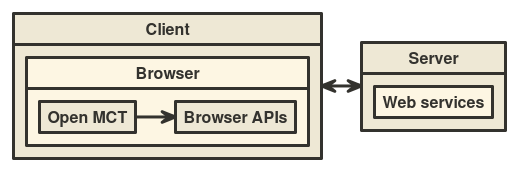
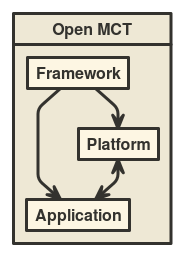

The purpose of this document is to familiarize developers with the overall architecture of Open MCT.
The target audience includes:
As the focus of this document is on architecture, whenever possible implementation details (such as relevant API or JSON syntax) have been omitted. These details may be found in the developer guide.
Open MCT is client software: It runs in a web browser and provides a user interface, while communicating with various server-side resources through browser APIs.

While Open MCT can be configured to run as a standalone client, this is rarely very useful. Instead, it is intended to be used as a display and interaction layer for information obtained from a variety of back-end services. Doing so requires authoring or utilizing adapter plugins which allow Open MCT to interact with these services.
Typically, the pattern here is to provide a known interface that Open MCT can utilize, and implement it such that it interacts with whatever back-end provides the relevant information. Examples of back-ends that can be utilized in this fashion include databases for the persistence of user-created objects, or sources of telemetry data.
The simplest overview of Open MCT is to look at it as a "layered" architecture, where each layer more clearly specifies the behavior of the software.

These layers are: